191 — Architecture review y comunicación con stakeholders
Parte: 15 — Arquitectura de sistemas e ingeniería de requisitos
Nivel: intermedio-avanzado · Horas estimadas: 4
Laboratorio: governance · Estado: EXECUTABLE_CORE
🎯 Propósito
Someter una arquitectura a revisión de forma que encuentre problemas, y comunicarla a audiencias que preguntan cosas distintas. La clase da el método de revisión basado en escenarios —que encuentra riesgos donde la revisión por opinión no encuentra nada—, la forma de traducir decisiones técnicas a las tres preguntas que hace cada audiencia, y la disciplina que hace útil una revisión: buscar riesgos y puntos sensibles, no aprobar o rechazar.
📚 Resultados de aprendizaje
Al finalizar podrás:
- Ejecutar una revisión de arquitectura basada en escenarios de calidad.
- Distinguir riesgo, punto sensible y cesión, y registrarlos.
- Traducir una decisión técnica a lo que cada audiencia necesita saber.
- Presentar una arquitectura con la estructura que resiste preguntas.
- Evitar que la revisión se convierta en un trámite de aprobación.
🧩 Conceptos centrales
| Concepto | Comprensión verificable |
|---|---|
revisión por escenarios |
Someter la arquitectura a escenarios de calidad concretos y ver cómo responde, en vez de opinar sobre el diagrama. |
riesgo |
Decisión que puede impedir cumplir un atributo de calidad. Es el producto principal de una revisión. |
punto sensible |
Decisión de la que depende un solo atributo. Cambiarla lo afecta directamente. |
punto de cesión |
Decisión de la que dependen varios atributos en direcciones opuestas. Es donde se decide de verdad. |
audiencia |
Quien paga, quien opera, quien construye y quien lo sufre. Cada una pregunta cosas distintas. |
revisión de aprobación |
La que solo dice sí o no. No encuentra nada y se convierte en trámite. |
🧠 Modelo mental
Una arquitectura es un conjunto de decisiones sobre estructuras, interfaces y atributos de calidad, respaldadas por escenarios y evidencia.
Aplicado a esta clase, separa siempre cuatro planos: intención (qué necesita el usuario), configuración (qué declaramos), estado observado (qué existe de verdad) y evidencia (cómo sabemos que cumple). Confundirlos produce diseños que se ven correctos en un diagrama pero fallan al operar.
🗺️ Flujo de razonamiento

📖 Desarrollo
1. Revisión por escenarios
La revisión habitual —presentar el diagrama y pedir comentarios— produce observaciones sobre nombres, tecnologías preferidas y detalles visibles. No encuentra riesgos porque no pregunta nada concreto.
La revisión por escenarios sí:
1. SE PARTE DE LOS ESCENARIOS DE CALIDAD clase 181
los medibles, no los adjetivos
2. SE PRIORIZAN CON NEGOCIO
importancia para el negocio × dificultad técnica percibida
→ se revisan los 5 u 8 primeros, no los veinte
3. SE RECORRE CADA ESCENARIO SOBRE EL DISEÑO
«entra este estímulo, en estas condiciones: ¿qué pasa,
componente por componente?»
→ y se anota dónde el diseño no tiene respuesta
4. SE CLASIFICA LO ENCONTRADO
riesgo · punto sensible · cesión · no-riesgo
5. SE DECIDE QUÉ HACER CON CADA RIESGO
y quién, y para cuándo
Y la distinción que ordena los hallazgos:
RIESGO
«si el pico llega a 3.000/s, el grupo de conexiones se
agota y la latencia se dispara»
→ tiene consecuencia y probabilidad; se decide
PUNTO SENSIBLE
«el tamaño del grupo de conexiones determina el caudal
máximo»
→ una sola decisión afecta a un atributo; se documenta
CESIÓN
«leer del primario garantiza ver lo propio y aumenta la
carga del primario»
→ afecta a dos atributos en direcciones opuestas; es donde
hay que decidir explícitamente clase 181
NO-RIESGO
también se anota: «esto está resuelto, y así»
→ evita revisarlo otra vez dentro de seis meses
Y la regla que hace útil la revisión:
el producto de una revisión es una LISTA DE RIESGOS con dueño
y fecha, no un veredicto
→ «aprobado» no dice nada y no mejora el diseño
→ y una revisión que no encuentra riesgos no se hizo bien
Y una advertencia de método:
quien presenta no puede ser quien modera
y quien revisa debe poder decir «no lo sé» sin coste
→ si la revisión evalúa a la persona, deja de encontrar cosas
2. Cómo se conduce, en la práctica
Una revisión útil dura entre dos y cuatro horas y tiene un orden concreto.
ANTES
el material se reparte con 3 días de antelación
→ diagrama C1 y C2 clase 182
→ escenarios de calidad medibles
→ registros de decisión relevantes clase 190
→ lo que ya se sabe que es riesgo
quien revisa llega con preguntas escritas
→ sin esto, la sesión se llena de preguntas de contexto
DURANTE
20 min contexto y objetivo de negocio, con cifras
20 min arquitectura: C1, C2, y las decisiones caras
30 min priorización de escenarios con negocio presente
90 min recorrido de los 5-8 escenarios elegidos
20 min riesgos, dueños y fechas
DESPUÉS
lista de riesgos publicada en 48 h
cada riesgo con dueño, acción y fecha
los no-riesgos también anotados
Y los cuatro papeles que hacen falta:
QUIEN PRESENTA conoce el diseño
QUIEN MODERA controla el tiempo y evita el desvío
QUIEN REVISA (2-4) de fuera del equipo, con experiencia
distinta: operación, datos, seguridad
NEGOCIO prioriza los escenarios ← imprescindible
Y el papel que más falta y más cambia el resultado:
sin negocio en la sala, los escenarios se priorizan por
criterio técnico
→ y se revisa lo interesante en vez de lo que importa
Las preguntas que más encuentran, por si hay poco tiempo:
¿qué pasa si esta dependencia responde en 5 s en vez de
fallar? clase 185
¿quién escribe este dato? ley 21
¿qué se rompe si desplegamos esto y aquello en orden
distinto?
¿cómo nos enteramos de que esto ha fallado? ley 13
¿qué pasa el día que haya que volver atrás?
¿esto se ha probado o se ha razonado? ley 22
¿cuánto cuesta al mes y por qué esa cifra?
¿qué decisión de aquí es la más cara de cambiar?
Y un patrón que aparece en casi todas las revisiones:
el equipo conoce sus riesgos técnicos
y NO conoce los de operación ni los de retirada
→ por eso quien revisa debe venir de operación, no solo
de arquitectura
3. Cuatro audiencias, cuatro preguntas
La misma arquitectura se cuenta de cuatro formas, porque cada audiencia decide algo distinto.
QUIEN PAGA (dirección, negocio, finanzas)
qué se gana, en términos de negocio
qué cuesta, al mes y de una vez
qué se arriesga, y qué pasa si sale mal
cuándo se nota
NO quiere nombres de tecnologías, diagramas de cajas
SÍ quiere una cifra de antes y una de después,
con su origen clase 179
QUIEN OPERA (guardia, plataforma, soporte)
qué se rompe y con qué frecuencia
cómo me entero
qué hago a las 3 de la mañana
qué he de aprender y cuánto trabajo nuevo me traes
NO quiere la justificación de la decisión
SÍ quiere procedimientos, alertas y quién es el dueño
QUIEN CONSTRUYE (equipos que usarán esto)
qué puedo cambiar sin pedir permiso
dónde están las fronteras
qué contrato tengo que respetar
cómo pruebo mi parte
SÍ quiere fronteras claras y un camino fácil clase 171
QUIEN LO SUFRE (usuarios, socios, otros equipos)
qué cambia para mí
cuándo, y qué tengo que hacer
qué pasa si no hago nada
SÍ quiere fechas y una lista de acciones
Y el error más frecuente de comunicación:
contar a dirección el porqué técnico
y a operación el porqué de negocio
→ ambos escuchan educadamente y no deciden nada
La estructura que resiste preguntas, para cualquiera de las cuatro:
1. el problema, con la cifra que lo demuestra
2. lo que se descubrió que no se sabía clase 178
3. la decisión, en una frase
4. las alternativas descartadas y por qué
5. lo que se acepta a cambio ← lo que da credibilidad
6. cómo sabremos si funcionó, y cuándo
Y el punto 5 es el que más se omite y el que más confianza genera:
una propuesta sin desventajas no se cree
→ decir «esto añade 1,4 ms y consistencia eventual de
10 minutos, aceptado por revenue» hace creíble el resto
Y una técnica que funciona con dirección:
presentar DOS opciones viables, no una
con su coste, su riesgo y su plazo
y una recomendación clara
→ una sola opción parece una decisión ya tomada que se viene
a ratificar, y genera resistencia
4. Que no se convierta en trámite
La revisión de arquitectura degenera en comité de aprobación con una facilidad notable, y entonces cumple la ley 16 como cualquier otro control.
SEÑALES DE QUE YA ES UN TRÁMITE
la revisión no ha rechazado ni cambiado nada en un año
los equipos la convocan cuando ya está construido
la salida es un «aprobado» sin lista de riesgos
se revisa todo, sin criterio de umbral
tarda semanas en conseguirse una fecha
quien revisa no ha operado nada nunca
Y las correcciones, una por señal:
UMBRAL CLARO DE QUÉ SE REVISA
lo caro de cambiar y lo que cruza fronteras de equipo
→ el resto, no clase 181
PRONTO Y EN BORRADOR
se revisa el diseño, no lo construido
→ una revisión sobre algo ya hecho solo puede aprobar o
generar rencor
SALIDA = RIESGOS, NO VEREDICTO
quien decide sigue siendo el equipo
→ la revisión aporta riesgos que el equipo no vio; lo que
haga con ellos es suyo, y queda registrado
DISPONIBILIDAD RÁPIDA
si conseguir fecha tarda tres semanas, se decide sin
revisión y se pide perdón ley 16
REVISORES QUE HAN OPERADO
quien nunca ha estado de guardia no pregunta lo que
importa a las 3 de la mañana
Y una medida honesta del valor de la revisión:
¿cuántos riesgos encontrados por revisión se materializaron
después?
→ alto: la revisión ve bien
¿cuántos incidentes tuvieron una causa que la revisión no vio?
→ esos son los que enseñan a revisar mejor
Y la lista de comprobación de la clase:
☐ la revisión parte de escenarios medibles, no del diagrama
☐ negocio estuvo presente para priorizar
☐ se recorrieron los escenarios sobre el diseño, uno a uno
☐ lo encontrado está clasificado en riesgo, sensible o cesión
☐ los no-riesgos también están anotados
☐ cada riesgo tiene dueño, acción y fecha
☐ la salida no es «aprobado» sino una lista
☐ quien presenta no modera
☐ al menos un revisor viene de operación
☐ la revisión ocurrió sobre el diseño, no sobre lo construido
☐ cada audiencia recibió lo que necesita decidir
☐ se dijo explícitamente qué se acepta a cambio
Y el cierre que enlaza con la clase siguiente: con requisitos, fronteras, disponibilidad, capacidad, consistencia, contratos, amenazas, decisiones registradas y revisión, queda aplicarlo todo a un sistema completo y comprobar si se sostiene. Es la materia de la clase 192, que además cierra la parte 15.
🔬 Ejemplo trabajado
La arquitectura de reservas se somete a revisión antes de construir. Lo que sigue son los escenarios priorizados con negocio, el recorrido de los cinco primeros, los nueve riesgos encontrados —tres de los cuales el equipo no había visto— y cómo se contó la misma decisión a cuatro audiencias.
La priorización, hecha con negocio en la sala:
escenario negocio dificultad revisar
QA-1 latencia de búsqueda alta media sí
QA-2 disponibilidad de reserva alta alta sí
QA-3 añadir método de pago alta alta sí
QA-5 recuperar tras borrado alta alta sí
QA-6 diagnóstico sin guardia media alta sí
QA-4 alcance tras compromiso alta media no*
QA-7 coste en campaña media baja no
* QA-4 se revisó por separado en el modelo de amenazas
Y una sorpresa de la priorización:
el equipo había puesto QA-1 (latencia) como el más importante
negocio puso QA-3 (añadir método de pago) igual de alto
motivo: había dos integraciones comprometidas por contrato
para el año siguiente, y el equipo no lo sabía
→ eso cambió el orden del trabajo clase 181
Recorrido del escenario QA-2 · disponibilidad de reserva.
estímulo pico de campaña; el servicio de recomendaciones cae
recorrido
el borde recibe la petición ok
la API llama a precios ← ¿y si tarda?
la API llama a catálogo ← ¿y si tarda?
la API escribe la reserva ok
la API llama a la pasarela dura, aceptada
la API publica el evento asíncrona, ok
HALLAZGOS
RIESGO 1 catálogo estaba declarado blando y la llamada no
tenía plazo ni alternativa
→ el equipo lo sabía desde la clase 185
RIESGO 2 el plazo hacia la pasarela era de 30 s
→ en saturación llena los hilos clase 186
→ EL EQUIPO NO LO HABÍA VISTO
CESIÓN precio cacheado 10 min: gana disponibilidad,
pierde exactitud → decidida y registrada
Recorrido del escenario QA-3 · añadir un método de pago en 5 días.
recorrido, paso a paso, sobre el diseño
añadir el proveedor nuevo en el coordinador de pago
→ el coordinador vive DENTRO de reservas ok
añadir la opción en la app ok
añadir la conciliación contable
→ la conciliación está en facturación heredada ← aquí
HALLAZGOS
RIESGO 3 el escenario NO se cumple: la parte contable
depende de un equipo externo con su propio
calendario, y su plazo típico es de 6 semanas
→ EL EQUIPO NO LO HABÍA VISTO
→ 5 días es imposible mientras la conciliación
viva ahí
acción definir un contrato de evento hacia facturación
para que los métodos nuevos no requieran cambios
en el heredado clase 188
Recorrido del escenario QA-6 · diagnóstico sin guardia nocturna.
estímulo suben los errores de pago un martes a las 3:00
recorrido
¿salta una alerta? sí, ritmo de consumo
¿llega al móvil? sí
¿identifica el servicio? sí
¿identifica el cambio responsable? ← ¿hay línea de cambios?
¿se puede diagnosticar sin acceso de escritura?
HALLAZGOS
RIESGO 4 la línea de cambios solo incluye despliegues
propios; los cambios de configuración de la
pasarela y las banderas de función no aparecen
→ EL EQUIPO NO LO HABÍA VISTO
RIESGO 5 el panel de diagnóstico no es usable en móvil
NO-RIESGO la correlación por identificador de traza está
bien resuelta; se anota para no revisarlo otra vez
Los nueve riesgos, con dueño y fecha:
# riesgo dueño fecha est.
1 catálogo dependencia dura sin plazo reservas sem 2 alto
2 plazo de 30 s hacia la pasarela reservas sem 1 alto
3 QA-3 imposible por conciliación arquitect. sem 6 alto
4 línea de cambios incompleta plataforma sem 4 medio
5 panel no usable en móvil plataforma sem 8 medio
6 restauración de precios sin ensayar datos sem 5 alto
7 sin control de salida en la subred seguridad sem 3 alto
nueva
8 el socio C con credencial estática alianzas trim bajo
(amenaza aceptada, se anota) revisión
9 precios: un solo escritor, sin plan reservas sem 10 medio
si esa persona no está
de los nueve, los que el equipo NO había visto 3, 4, 5
y los tres venían de revisores de operación
Y la observación del moderador, anotada en el acta:
los riesgos que el equipo ya conocía eran todos técnicos
los tres nuevos eran de operación y de dependencia
organizativa
→ confirma que un revisor que ha estado de guardia encuentra
lo que el equipo no ve
La misma decisión, contada a cuatro audiencias. Decisión: sacar precios a su propio servicio.
A DIRECCIÓN (5 minutos)
«Los cambios de precio tardan hoy entre 2 y 6 semanas
porque hay que coordinar con catálogo, y 4 veces este
año una promoción salió tarde. Separando precios, pasan
a 5 días. Cuesta 10 semanas de trabajo y unos 210 €/mes
más. A cambio, el precio que se ve en el catálogo puede
ir hasta 10 minutos por detrás; revenue lo ha aceptado
por escrito. Sabremos si funcionó en el primer trimestre:
la medida es días desde que se aprueba un precio hasta
que está vivo.»
A OPERACIÓN (5 minutos)
«Un servicio más, con su guardia. Se rompe si su almacén
no responde: entonces reservas usa el último precio válido
y sigue funcionando, así que no es una llamada de
madrugada. La alerta que sí lo es: retraso de propagación
por encima de 15 minutos. Procedimiento escrito y probado
por alguien de fuera del equipo. Dueño: equipo de
reservas. Y os quitamos tres alertas de ‹precio
incorrecto› que llevaban dos años sin causa conocida.»
A LOS EQUIPOS QUE CONSTRUYEN
«El precio ya no está en la tabla de catálogo. Se pide al
servicio de precios o se escucha su evento. Contrato
versionado, compatible hacia delante, con pruebas de
contrato en nuestra canalización: si rompemos algo, falla
nuestro despliegue, no el vuestro. Podéis cambiar vuestra
parte sin pedirnos nada mientras respetéis el contrato.»
AL SOCIO Y AL EQUIPO DE INFORMES (quien lo sufre)
«A partir del 14 de octubre, el campo precio del catálogo
deja de actualizarse en tiempo real y puede ir hasta 10
minutos por detrás. Si necesitáis el precio exacto en el
momento, usad el endpoint de precios, que os damos ahora.
Si no hacéis nada, veréis precios con hasta 10 minutos de
retraso. Contacto para dudas: X.»
Y el detalle que hizo que dirección aprobara sin discusión:
se presentaron DOS opciones
A separar precios 10 semanas, 210 €/mes
B mantener y añadir validación 3 semanas, 0 €
→ no resuelve el bloqueo; los 5 días siguen siendo
6 semanas
recomendación: A, con el motivo
→ y la pregunta de dirección fue sobre el plazo, no sobre
si hacerlo
La lección que esta clase deja: la revisión encontró nueve riesgos y los tres que el equipo no había visto no eran técnicos: un plazo demasiado largo hacia un tercero, una línea de cambios incompleta y un escenario de negocio que resultaba imposible por depender de un equipo externo. Los tres los encontraron revisores que habían estado de guardia. Y el escenario que negocio priorizó más alto —añadir un método de pago— el equipo ni siquiera sabía que estaba comprometido por contrato.
🧪 Laboratorio guiado
Ejecuta desde la raíz:
python classes/part-15-systems-architecture-engineering/191-architecture-review-y-comunicacion-con-stakeholders/lab.py
El laboratorio selecciona el motor de práctica governance y produce
lab_result.json. El escenario, sus comprobaciones y el artefacto esperado corresponden a
esta clase; no requiere credenciales y deja explícito qué debe revalidarse en un sandbox real.
- Lee
exercise.stepsy formula una predicción antes de ejecutar. - Ejecuta la práctica y verifica todos los elementos de
checks. - Provoca el caso de
negative_testy explica la señal observada. - Materializa
architecture-reviewenevidence/usando la plantilla indicada. - Para proveedor real, sigue
sandbox.requires, registra costo y ejecutadestroy.
Evidencia esperada
El artefacto principal es una jerarquía de política, ownership y evidencia. Además, la entrega debe incluir el comando ejecutado, la salida estructurada y una conclusión que no exceda lo observado.
🏆 Reto verificable
Construye architecture-review para el caso CloudShop. Incluye una alternativa descartada,
un supuesto que pueda falsarse, una prueba de fallo y una decisión de rollback.
✅ Criterio de aceptación
- [ ]
lab.pytermina con código 0 y genera JSON válido. - [ ] La entrega conecta al menos tres requisitos con mecanismos verificables.
- [ ] Existe una prueba positiva y una prueba negativa con evidencia.
- [ ] Seguridad, costo y operación aparecen como decisiones, no como anexos.
- [ ] Se declara una limitación y una condición que obligaría a revisar el diseño.
- [ ] Otra persona puede repetir el recorrido sin conocimiento tácito.
⚠️ Errores frecuentes
| Síntoma | Causa probable | Corrección |
|---|---|---|
| La revisión solo produce comentarios sobre nombres y tecnologías | Se presentó el diagrama y se pidieron opiniones, sin escenarios concretos | Parte de escenarios de calidad medibles y recórrelos uno a uno sobre el diseño. |
| Se revisa lo interesante en vez de lo que importa | Los escenarios se priorizaron con criterio técnico | Prioriza con negocio presente, cruzando importancia de negocio y dificultad técnica. |
| La revisión no ha cambiado nada en un año | Es un comité de aprobación que llega cuando ya está construido | Revisa el diseño en borrador, con umbral claro de qué se revisa, y que la salida sea una lista de riesgos con dueño y fecha. |
| El equipo sale de la revisión sin haber aprendido nada nuevo | Los revisores tienen el mismo perfil que quien presenta | Incluye al menos un revisor que haya estado de guardia; los riesgos de operación y de retirada son los que el equipo no ve. |
| Dirección escucha la propuesta y no decide | Se le contó el porqué técnico en vez de coste, riesgo y plazo | Presenta dos opciones viables con su coste y riesgo, y una recomendación clara. |
| Una propuesta genera desconfianza pese a ser buena | Se presentó sin desventajas | Di explícitamente qué se acepta a cambio y quién lo ha aceptado. |
🛡️ Seguridad, ética y costo
Trabaja con cuentas propias o sandboxes autorizados. No publiques secretos, identificadores reales ni datos personales. Antes de crear recursos pagos define presupuesto, etiquetas y comando de destrucción; después verifica que no queden recursos huérfanos. Los ejemplos locales enseñan contratos, pero no certifican cumplimiento ni disponibilidad de producción.
❓ Preguntas de comprobación
- ¿Qué diferencia hay entre riesgo, punto sensible y punto de cesión?
- ¿Por qué el producto de una revisión no debe ser un veredicto?
- ¿Qué aporta tener a negocio en la sala durante la priorización?
- ¿Qué necesita saber quien opera y qué no le interesa?
- ¿Qué señales indican que la revisión se ha convertido en trámite?
🔗 Referencias
- Clements, P., Kazman, R. y Klein, M. (2001). Evaluating Software Architectures: Methods and Case Studies (ATAM). https://www.oreilly.com/library/view/evaluating-software-architectures/9780201704822/
- SEI (2000). ATAM: Method for Architecture Evaluation. https://insights.sei.cmu.edu/library/atam-method-for-architecture-evaluation/
- Bass, L., Clements, P. y Kazman, R. (2021). Software Architecture in Practice, cap. de evaluación. https://www.oreilly.com/library/view/software-architecture-in/9780136886051/
- Brown, S. (2019). Software Architecture for Developers, vol. 2 — comunicación por audiencias. https://leanpub.com/visualising-software-architecture
- Google (2025). Architecture review practices en Cloud Architecture Framework. https://cloud.google.com/architecture/framework
- Documentación oficial vigente del servicio implementado; registra URL y fecha de consulta.
📥 Descargar: Parte 15 en PDF · Manual integral